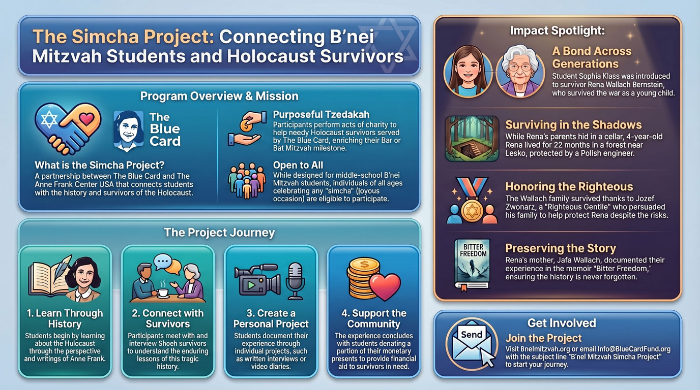
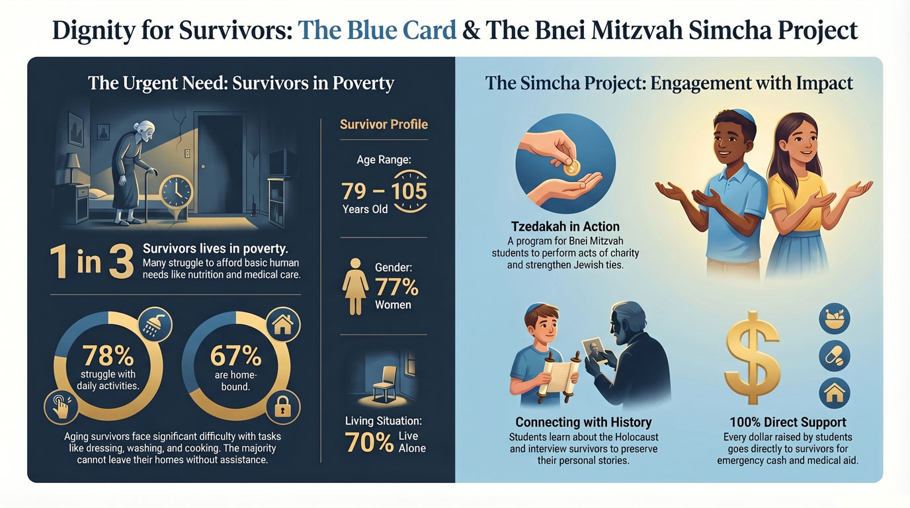

Who can participate
B'nei Mitzvah students, students of all ages, and individuals celebrating a simcha or other meaningful occasion.
A meaningful way for Jewish teens and families to celebrate a simcha with deeper purpose, connect with Holocaust history, and support Holocaust survivors served by The Blue Card.


As Jewish teens take on responsibility, they may support The Blue Card with a more personal commitment. Many Bar and Bat Mitzvah students want their celebration to carry deeper meaning by strengthening their ties to the global Jewish community and by performing tzedakah through an act of charity.
Working with The Anne Frank Center USA, The Blue Card created The Simcha Project as an engaging program for B'nei Mitzvah students. The program is especially designed for middle-school students. Students of all ages, along with individuals celebrating a simcha or special occasion, are also eligible.
Participants learn about the Holocaust through the eyes of Anne Frank and then begin individual projects such as interviews or video diaries with survivors. The opportunity to meet with and interview survivors of the Shoah, understand the enduring lessons of this tragic history, and enhance a personal connection to Judaism makes this project truly unforgettable.
B'nei Mitzvah students, students of all ages, and individuals celebrating a simcha or other meaningful occasion.
Holocaust education, Jewish identity, survivor connection, remembrance, and compassionate giving.
Interviews with survivors, video diaries, reflections, and personal storytelling rooted in memory and understanding.
The experience creates a lasting connection to Jewish history while making a direct impact on vulnerable survivors today.
Participants explore Holocaust history through Anne Frank’s story and through the lived experiences of survivors, building a deeper understanding of memory, resilience, and Jewish identity.
Students develop thoughtful projects such as survivor interviews, written reflections, or video diaries that turn education into a personal act of remembrance and connection.
Participants donate a portion of their monetary gifts to help needy Holocaust survivors served by The Blue Card, bringing celebration, compassion, and action together in one meaningful experience.
Rena Wallach Bernstein, as a four-year-old girl, lived for twenty-two months with a Polish family in the forest near Lesko during World War II. Sophia learned that Rena’s parents, Jafa and Nathan Wallach, were sheltered by a Polish engineer in a narrow earthen cellar below the floor of his workshop.
On either side of the workshop were buildings used by Nazis and Ukrainians, so their survival was in jeopardy every day. Rena, by contrast, was allowed to roam the forest, eating berries, exploring the trees, and befriending the animals. She missed her parents and had limited interaction with the couple sheltering her.
The family protecting her was at times pressured by extended relatives to kill her out of fear they would be killed by the Nazis for taking care of a Jewish child. The engineer persuaded them to keep her alive. At the end of the war, Rena was reunited with both of her parents.
The Wallach family survived thanks to Jozef Zwonarz, who was later named a Righteous Gentile. Jafa Wallach wrote her memoir, Bitter Freedom, in 1959, and it was published in 2006.
Families who want to bring greater purpose to a B'nei Mitzvah or other simcha are invited to participate. This project gives students a powerful opportunity to meet survivors, engage with Jewish history, and turn celebration into meaningful action.
For more information, please visit Bneimitzvah.org. To join the B'nei Mitzvah Simcha Project, email The Blue Card and use the subject line below.
Email: Info@BlueCardFund.org
Subject line: “B'nei Mitzvah Simcha Project”
More information: Bneimitzvah.org